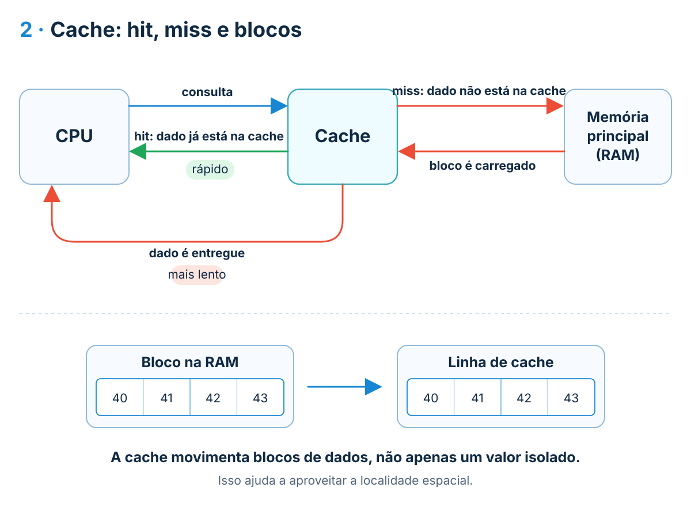

Onde colocar?
O mapeamento define quais linhas da cache podem receber cada bloco.
Aula 06 · aprofundamento teórico
Na aula principal observamos que onde os dados estão e como são acessados pode alterar o tempo de execução. Agora vamos descer um nível: entender por que existe uma hierarquia de memória, como a cache trabalha com blocos, como RAM e armazenamento diferem fisicamente e como os mecanismos de entrada/saída movimentam dados sem transformar a CPU em uma simples copiadora.
1 · A hierarquia como decisão de projeto
A hierarquia de memória não existe apenas para organizar componentes. Ela é uma resposta à relação entre velocidade, capacidade e custo: tecnologias de memória mais rápidas tendem a ser mais caras por bit e, por isso, aparecem em capacidades menores; tecnologias de maior capacidade tendem a apresentar maior tempo de acesso.
Se toda a memória do computador fosse construída apenas com a tecnologia mais rápida disponível, o custo e a área necessários cresceriam de forma incompatível com a capacidade desejada. Se usássemos somente uma tecnologia de alta capacidade e baixo custo, o processador ficaria exposto com muito mais frequência ao tempo de acesso dos níveis lentos.
A solução é manter pequenas quantidades de informação próximas do processador e capacidades maiores nos níveis seguintes. Essa estratégia só funciona bem porque programas não acessam todos os seus dados com a mesma frequência.
Durante certos intervalos da execução, referências a instruções e dados tendem a se concentrar. A localidade temporal descreve a reutilização de algo acessado recentemente; a localidade espacial descreve a tendência de acessar posições próximas.
Quando um pequeno subconjunto é usado repetidamente, os níveis rápidos podem atender grande parte das referências mesmo sendo muito menores que a memória total do sistema.
Na hierarquia de memória, ao descer os níveis, normalmente aumentam a capacidade e o tempo de acesso, enquanto diminui o custo por bit.
A hierarquia não muda o algoritmo abstrato, mas muda o custo de executar seus acessos a dados. Por isso dois percursos logicamente equivalentes podem apresentar tempos diferentes.
2 · Cache: hit, miss e blocos
Antes de buscar um dado na memória principal, o processador consulta os níveis de cache. Se o dado necessário já estiver no nível consultado, ocorre um cache hit, ou seja, um acerto. Se ele não estiver ali, ocorre um cache miss, ou seja, uma falta, e a busca precisa continuar em um nível mais distante da hierarquia.
Em um hit, a cache já contém o bloco que inclui o endereço solicitado. O acesso pode ser atendido naquele nível, evitando naquele momento uma consulta à RAM ou a outro nível mais lento.
Em um miss, o bloco não está disponível no nível consultado. A busca continua na hierarquia. Quando o bloco é encontrado em um nível inferior, ele pode ser trazido para a cache para atender o acesso atual e, possivelmente, acessos seguintes.
Isso leva a uma ideia importante: a cache não trabalha apenas com o valor isolado solicitado. Ela movimenta blocos de dados. É justamente esse comportamento que permite aproveitar a localidade espacial.

A memória principal pode ser vista, para esse mecanismo, como dividida em blocos. A cache é dividida em linhas capazes de receber esses blocos. Quando o endereço procurado não está em um nível da cache, o sistema busca o bloco correspondente em um nível inferior e o copia para uma linha.
Esse comportamento explica por que, depois de acessar a posição 40, acessar 41, 42 ou 43 pode ser favorável: posições vizinhas podem já ter chegado junto com a primeira referência.
Uma linha precisa guardar não apenas os dados, mas também informação que permita identificar qual bloco da memória principal está representado ali. Essa identificação é associada ao campo conhecido como tag.
Assim, consultar a cache envolve verificar se existe uma linha válida cuja identificação corresponda ao endereço solicitado. Se houver correspondência, temos um hit; caso contrário, um miss.
Tempo médio ≈ tempo de hit + taxa de miss × penalidade de miss
É uma forma simplificada de enxergar o efeito da cache: uma taxa pequena de faltas ainda pode importar bastante quando buscar o próximo nível é muito mais caro.
Se um acesso atendido pela cache custa aproximadamente 1 unidade de tempo, 5% dos acessos falham e cada falha acrescenta 50 unidades, o custo médio simplificado fica em 1 + 0,05 × 50 = 3,5. A maior parte dos acessos ainda é atendida rapidamente, mas as faltas alteram de forma significativa a média.
O valor numérico é apenas ilustrativo. O ponto importante é compreender que o desempenho da hierarquia depende tanto da velocidade dos níveis quanto da frequência com que o programa consegue reutilizar o que já está próximo.
3 · Decisões internas da cache
Até aqui vimos o que acontece em um hit e em um miss. Agora surge uma questão prática: quando um bloco chega da memória principal, onde ele pode ser colocado? Se o espaço permitido já estiver ocupado, quem deve sair? E, se o processador alterar um dado, quando essa mudança chega à RAM?
O mapeamento define quais linhas da cache podem receber cada bloco.
Se todas as linhas permitidas estiverem ocupadas, uma política de substituição escolhe qual bloco será removido.
A política de escrita define quando uma alteração feita na cache é propagada para o nível inferior.
Imagine uma cache pequena com quatro linhas. A memória principal possui muitos blocos, mas a cache só consegue manter alguns deles por vez. O mapeamento estabelece quais posições podem receber cada bloco.
Cada bloco possui uma linha determinada da cache. Por exemplo, os blocos 0 e 4 podem disputar a mesma linha. Mesmo que existam outras linhas livres, eles não podem ser colocados nelas.
Ideia-chave: é simples localizar o bloco, mas podem ocorrer conflitos frequentes.
O bloco pode ocupar qualquer linha disponível. Se o bloco 0 já está na cache e chega o bloco 4, o novo bloco pode utilizar outra linha livre.
Ideia-chave: há mais liberdade de posicionamento, mas o hardware precisa procurar o bloco entre várias linhas.
A cache é dividida em conjuntos. Cada bloco é direcionado para um conjunto específico, mas pode ocupar uma das linhas daquele conjunto.
Ideia-chave: é um meio-termo entre a rigidez do mapeamento direto e a liberdade do associativo.
Os três modelos não mudam o conteúdo do bloco. Eles mudam onde esse bloco pode ficar dentro da cache. Essa escolha influencia a quantidade de conflitos e a complexidade necessária para localizar os dados.
No mapeamento direto não existe escolha: se outro bloco precisar daquela linha, o bloco atual será substituído. Nos modelos com mais de uma possibilidade de posição, pode ser necessário escolher entre várias linhas ocupadas.
Uma política conhecida é a LRU, que procura retirar o bloco que não é usado há mais tempo. Também existem políticas como FIFO e escolhas aleatórias.
Para esta aula, não é necessário memorizar todas as políticas. O importante é perceber que substituir um bloco pode eliminar um dado que seria reutilizado logo depois. Quando isso acontece repetidamente, aumentam os misses.
Suponha que o processador leia um valor da cache e depois o modifique. A cópia que está na cache mudou, mas precisamos decidir quando o nível inferior receberá essa nova versão.
A escrita é atualizada na cache e também propagada ao nível inferior. Isso mantém a memória principal atualizada, mas aumenta o tráfego de escrita.
A alteração permanece inicialmente na cache. O bloco modificado é enviado ao nível inferior quando precisa ser substituído, reduzindo escritas imediatas.
Primeiro o mapeamento determina onde o bloco pode ficar. Se as posições possíveis estiverem ocupadas, a substituição determina quem sai. Se o bloco for alterado, a política de escrita determina quando a mudança será propagada.
Mapeamento, substituição e política de escrita são mecanismos da arquitetura. O código influencia indiretamente o resultado ao determinar quais endereços são acessados, em que ordem e com que frequência.
4 · A memória principal por dentro
Cache e memória principal armazenam bits, mas cumprem papéis diferentes no computador. A cache precisa responder muito rapidamente e fica próxima do processador. A memória principal precisa oferecer muito mais capacidade. Por isso, elas normalmente usam tecnologias diferentes: SRAM na cache e DRAM na memória principal.
SRAM e DRAM são tipos de memória semicondutora de acesso aleatório. Neste contexto, ambas são voláteis: precisam de alimentação elétrica para manter os dados. A diferença principal está em como cada tecnologia mantém um bit e nas consequências disso para velocidade, densidade e custo.
SRAM
A Static RAM mantém o valor armazenado enquanto houver alimentação, sem precisar de um ciclo periódico de refresh.
Ela ocupa mais área por bit e custa mais, por isso aparece em capacidades menores, especialmente nos níveis de cache.
DRAM
A Dynamic RAM armazena o bit de uma forma que precisa ser restaurada periodicamente. Esse processo é chamado de refresh.
Ela permite maior densidade e menor custo por bit, por isso é adequada para a memória principal.
Os nomes descrevem a forma como o estado elétrico é mantido. Na SRAM, o valor permanece estável enquanto houver alimentação. Na DRAM, a informação precisa ser restaurada periodicamente. Em ambos os casos, o programa pode ler e escrever dados normalmente.
Seria possível imaginar uma memória principal feita com uma tecnologia muito rápida, mas o custo e a área necessários cresceriam bastante. Para disponibilizar gigabytes de memória de forma viável, a DRAM oferece uma relação mais adequada entre capacidade, área e custo.
Por isso, a hierarquia combina pouca SRAM muito rápida perto do processador com muito mais DRAM na memória principal.
As células de DRAM não preservam sua carga indefinidamente. O sistema precisa renovar periodicamente esses valores para que os bits armazenados não se percam. Esse trabalho é coordenado pelo hardware de memória e não pelo programa que está sendo executado.
A SDRAM é uma DRAM síncrona. Isso significa que comandos e transferências são organizados em relação a um sinal de clock. O controlador de memória consegue coordenar melhor a sequência de operações e transferências.
DDR significa Double Data Rate. A interface transfere dados em duas transições do sinal de clock, aumentando a quantidade de informação que pode ser movimentada por ciclo.
As memórias DDR também trabalham bem com transferências em sequência, chamadas de rajadas. Depois que um acesso é preparado, vários dados próximos podem ser transferidos de forma eficiente. Isso se relaciona diretamente com a localidade espacial vista na seção de cache.
Normalmente usa SRAM porque precisa reduzir o tempo de acesso aos dados mais próximos do processador.
Normalmente usa DRAM porque precisa oferecer uma capacidade muito maior com custo e área viáveis.
Coordena comandos, endereços, refresh e transferências entre o sistema e os módulos de DRAM.
SRAM: pouca, muito rápida, próxima da CPU. DRAM: muito mais capacidade, usada como memória principal. SDRAM/DDR: formas de organizar e acelerar a comunicação com a DRAM.
5 · Persistência
Na aula principal comparamos armazenamento magnético e estado sólido em termos de acesso e desempenho. O aprofundamento mostra por que acesso sequencial e aleatório têm custos diferentes e por que um SSD não deve ser entendido apenas como “um disco mais rápido”.
HDD · disco magnético
Dados são organizados em superfícies magnéticas divididas em estruturas como trilhas e setores. Para alcançar uma posição, um HDD com cabeça móvel precisa deslocar o mecanismo até a trilha adequada e aguardar a posição angular necessária.
Por isso, o tempo de acesso inclui componentes como tempo de busca, atraso rotacional e tempo de transferência.
SSD · memória flash
Um SSD combina controlador, lógica de endereçamento, buffers, correção de erros e chips de memória flash NAND.
Não há busca mecânica de uma cabeça, o que reduz fortemente o custo relativo dos acessos aleatórios. Entretanto, a memória flash possui granularidades diferentes para leitura/escrita e apagamento, o que torna as escritas mais complexas que uma simples sobrescrita de byte.
Depois que a cabeça está posicionada e o setor correto chega à posição de leitura, transferir uma sequência contígua pode aproveitar esse posicionamento. Quando o padrão exige saltos frequentes entre regiões distantes, novos movimentos e esperas precisam ser introduzidos.
É por isso que, em discos magnéticos, o custo de acessar muitos pequenos pontos espalhados pode ser muito diferente do custo de transferir um grande trecho sequencial.
A memória flash NAND é organizada em páginas agrupadas em blocos. A escrita ocorre em páginas, mas o apagamento opera em blocos maiores. Se for necessário atualizar dados em uma região já usada, o controlador pode precisar reorganizar informação antes de reutilizar o bloco.
Essa característica explica por que desempenho de leitura e escrita não são idênticos e por que controladores de SSD possuem firmware, buffers e mecanismos de gerenciamento além dos chips de flash.
Representa quanto tempo é necessário para começar e completar uma operação específica.
Representa quanto dado pode ser transferido por unidade de tempo quando o fluxo está estabelecido.
Um dispositivo pode ter boa vazão para grandes transferências e ainda apresentar custos relevantes quando a aplicação cria muitas operações pequenas.
A memória flash também usa o termo página para sua granularidade de armazenamento. Isso não é o mesmo conceito que página de memória virtual. Paginação de memória virtual será tratada mais adiante, no bloco de Sistemas Operacionais.
6 · Entrada e saída
Uma operação de E/S envolve mais do que o dispositivo físico. Controladores ou módulos de E/S fazem a mediação com o sistema, mantêm registradores de dados e estado, recebem comandos e coordenam transferências.
O processador envia o comando e consulta repetidamente o módulo para descobrir quando a operação terminou. Esse modelo pode consumir tempo esperando ativamente.
Depois de iniciar a operação, a CPU pode continuar outro trabalho. Quando o módulo conclui, uma interrupção sinaliza que há algo a tratar.
O acesso direto à memória permite que módulo de E/S e memória principal troquem dados sem fazer cada palavra passar pelo processador.
Na E/S por interrupção, a CPU deixa de esperar continuamente, mas ainda pode participar da movimentação de cada unidade de dados entre módulo de E/S e memória. Em transferências grandes, isso continua sendo um custo importante.
Com DMA, o processador configura a transferência, definindo origem/destino, direção e quantidade, e o mecanismo de DMA assume a movimentação entre E/S e memória. Quando a transferência termina, o processador pode ser notificado.
O ganho conceitual não é “fazer E/S sem CPU”. A CPU continua coordenando o sistema. O ganho é retirar do processador o trabalho repetitivo de copiar cada unidade do bloco.
Dispositivos, controladores, bibliotecas e o próprio sistema operacional podem usar áreas temporárias para acumular dados e compatibilizar diferenças de velocidade ou tamanho de transferência. Por isso, uma operação de alto nível da aplicação raramente corresponde de forma direta a uma única operação física.
A CPU pergunta repetidamente “terminou?”. É simples, mas pode desperdiçar ciclos.
O processador pode executar outro trabalho e responder quando o dispositivo sinaliza um evento.
É particularmente útil para movimentar blocos sem exigir que cada item atravesse registradores da CPU.
7 · Da arquitetura de volta ao código
O engenheiro de software não escolhe manualmente a linha da cache, a política de substituição ou o ciclo de refresh da DRAM. Mesmo assim, decisões de representação e acesso determinam a sequência de endereços que o hardware precisará atender.
Quando uma estrutura é percorrida em posições adjacentes, um bloco trazido para a cache pode fornecer vários dos próximos elementos. O experimento por linhas da Aula 06 foi desenhado justamente para tornar esse comportamento visível.
Estruturas em que cada objeto aponta para outro objeto distante podem exigir acessos a muitos blocos diferentes. A funcionalidade pode estar correta, mas a localidade espacial tende a ser menor.
Dividir um conjunto grande em partes pode reduzir a quantidade de dados ativamente manipulada em cada fase, aumentando a chance de reutilizar informação antes que ela seja desalojada dos níveis rápidos.
Na parte de persistência da Aula 06, muitas chamadas de write() foram comparadas com uma chamada agrupada. O objetivo não é afirmar que cada write() vira uma operação física. Ao contrário: o exemplo mostra que a aplicação, as bibliotecas e o sistema podem usar buffering e transformar várias operações de alto nível antes de o dispositivo realmente receber os dados.
Antes de otimizar, identifique se a execução realmente é limitada por movimentação de dados. Localidade é importante, mas não substitui medição.
Duas implementações podem produzir exatamente a mesma resposta e ainda gerar padrões de cache, RAM e E/S muito diferentes.
Uma chamada de função, uma leitura de arquivo ou um acesso a uma posição de uma coleção são operações vistas pelo software. Abaixo delas podem existir caches, buffers, tradução de endereços, controladores e transferências em blocos. O aprofundamento serve justamente para revelar parte dessas camadas.
8 · Perfis de carga revisitados
Depois de abrir a hierarquia e os mecanismos de E/S, os três perfis da aula principal podem ser interpretados com mais precisão. Eles não são rótulos permanentes da aplicação, mas descrições do recurso que domina uma fase observada.
As unidades de execução permanecem ocupadas com operações computacionais. Reduzir espera de E/S não altera significativamente o tempo se o processamento continuar sendo dominante.
Faltas de cache, baixa localidade ou grande volume de dados fazem a execução depender da capacidade de mover informação entre cache e memória principal.
A fase passa parcela importante do tempo aguardando leitura, escrita, rede ou outro dispositivo de entrada/saída.
Uma aplicação pode começar lendo gigabytes de um SSD, passar para uma fase que percorre estruturas muito grandes em RAM e terminar realizando cálculos intensivos sobre um subconjunto dos dados. Cada etapa pode ter um gargalo diferente.
Por isso, a classificação deve ser usada como hipótese de análise. Medições de tempo, utilização e eventos de hardware ajudam a confirmar onde a execução está realmente limitada.
O perfil observado emerge da interação entre o trabalho exigido pelo software e a capacidade dos componentes que precisam atendê-lo.
A representação dos dados, a ordem de processamento, a quantidade de cópias e o padrão de persistência influenciam qual recurso será pressionado.
9 · Síntese
O aprofundamento amplia a Aula 06 sem trocar seu eixo: o custo de um programa não depende apenas do cálculo realizado, mas também de onde os dados estão, de como se movem e de quanto o software consegue explorar a hierarquia.
Combina tecnologias para equilibrar tempo de acesso, capacidade e custo.
Move blocos para linhas e depende de localidade para manter alta taxa de acerto.
Define onde blocos podem ser colocados; substituição decide o que sai quando necessário.
Write-through e write-back usam estratégias diferentes para equilibrar atualização da memória e tráfego de escrita.
SRAM e DRAM têm características diferentes; DDR busca ampliar a taxa de transferência da memória principal.
HDD depende de mecanismos físicos de posicionamento; SSD depende de controlador e regras da flash NAND.
Interrupções reduzem espera ativa e DMA permite transferência direta entre módulo de E/S e memória.
Estruturas e padrões de acesso definem o tráfego que a hierarquia precisa atender.
Memória virtual e paginação entram quando o foco passa para gerenciamento de memória pelo SO.
Referências
O aprofundamento foi construído a partir dos PDFs que integram o projeto da disciplina e preserva a separação entre arquitetura física e gerenciamento de memória pelo sistema operacional.